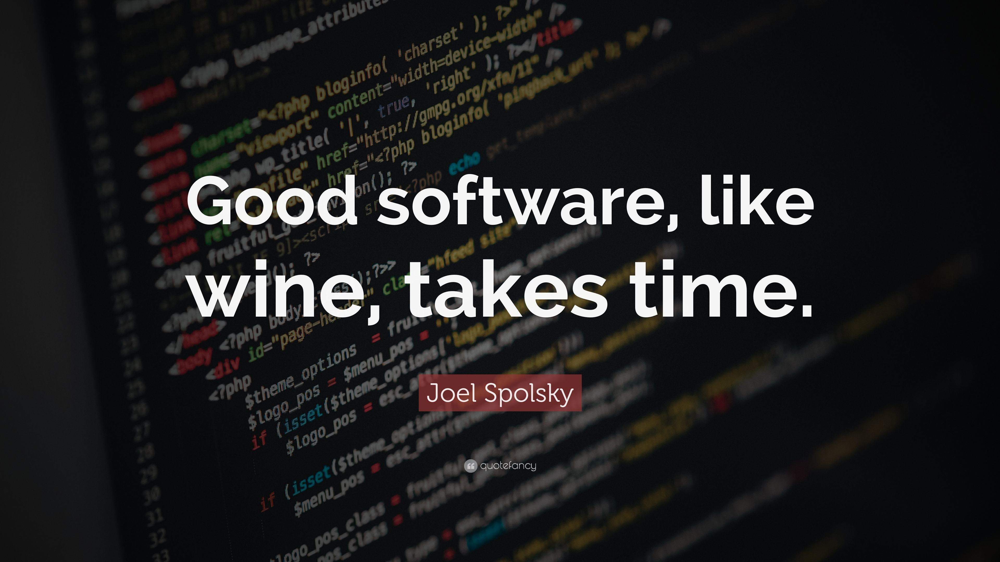

Hi . My Name is Bailey Swanepoel. An aspiring fully-stacked web developer with bigger dreams than my diciplines itself. For the past year i've eagerly been caught up in clearing time to focus souly on coding & development and finally the time has come where this project can be my main focus for the day and also enjoying the process of setting this entire webpage up.
HTML 5, CSS 3, JavaScript, NodeJS, React, MongoDB, Web3 & DApps are but the few langueges I'm going to be introduced to in this course.
Feb 2022 - Present
2020 - 2022
April 2021 - June 2021
Dec 2020 - Feb 2021
Part-time position from 2018 - 2019
Since I matriculated in 2019 I have grown and developt in many areas. My horizons have been broadend and my faith even tested. Thanks to The Lord Yeshua I'm still alive and more ready than ever to hone in on my passions to become the best I possibly can at what I do.
Here are some skills I picked up in the past years :
UAV Industries (wouldn't recommend them)
Udemy - Complete Web Dev Bootcamp
Ten Rounds. . .IS going to be the ultimate experience